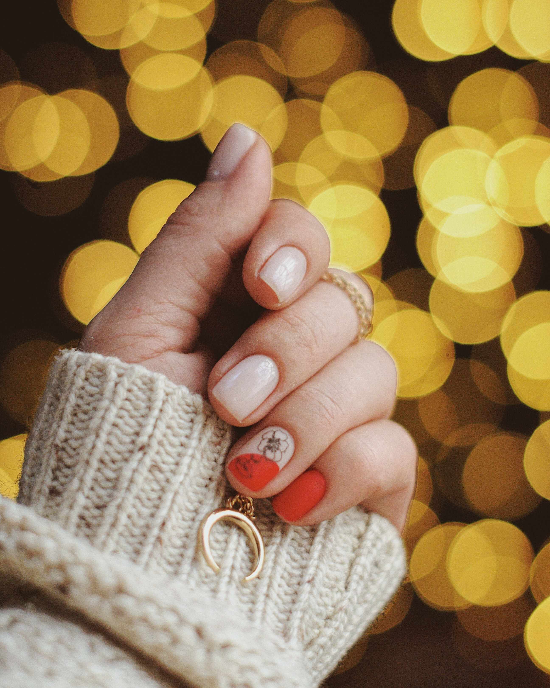

Se cortan, se liman y se limpian a profundida las uñas de las manos, haciendo masajes, este cuidado de las uñas hace lucir unas manos con aspecto bonito,
limpio y suave.
Existen varios tipos:
-Manicura francesa inversa, que resulta muy elegante y que apuesta por pintar de color blanco lo que es la zona de la base de la uña.
-Manicura americana, que opta porque las uñas luzcan de forma natural y neutra. Eso sin pasar por alto que adquieren una apariencia redondeada y habitualmente se presentan en tonos marfil.
-Manicura espejo. Esta es una de las últimas tendencias que han aparecido y lo ha hecho gracias a las redes sociales. En concreto, en ella las uñas se pintan en negro, en cromo y con brillo.
Ventajas: no maltrata tanto las primeras capas de las uñas ya que se puede quitar facilmente con un quitaesmaltes.
Desventajas: Poca duración.